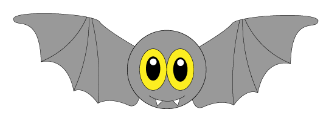
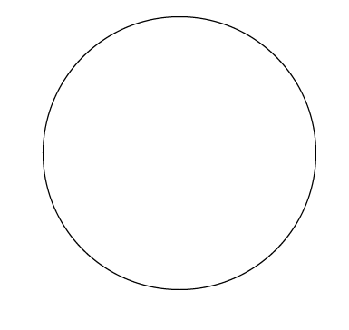
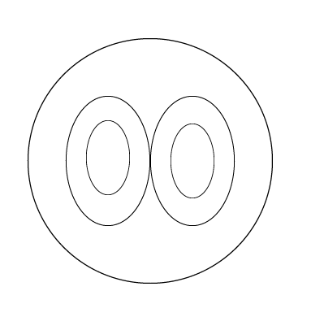
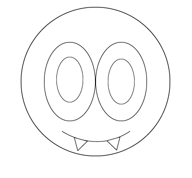
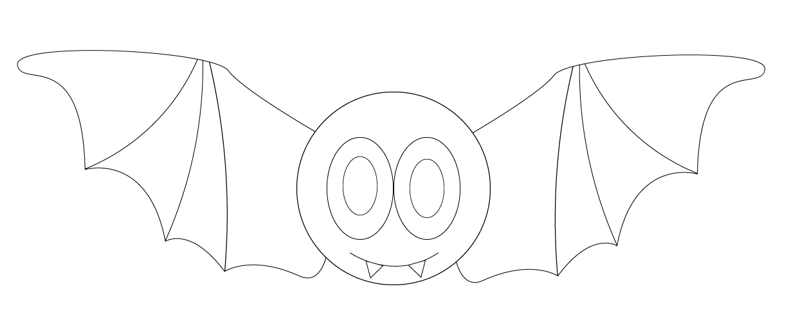
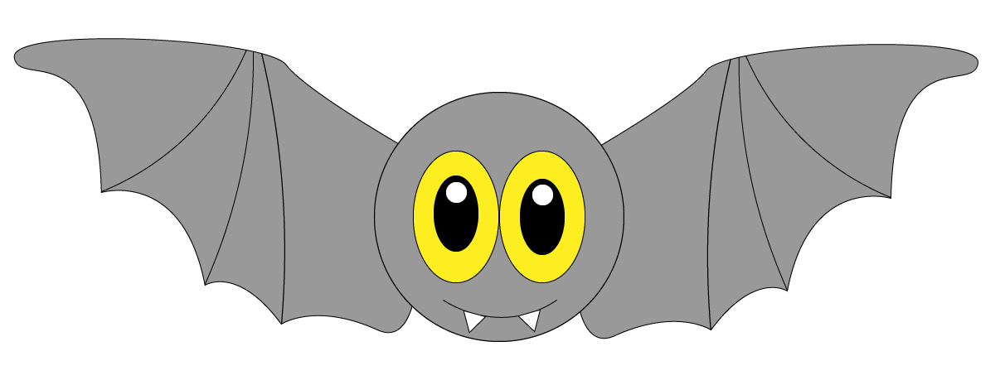

How to: Draw a Halloween Bat!

Use the arrows to the right and left of the page to see a step-by-step of how to draw this cute and simple bat!
Learn about some awesome bat facts along the way by clicking the "CLICK ME" links at the top of each page!

Step 1
-Draw a large circle

Step 2
-Add two ovals in the middle of the circle. Draw a large one for the colored part of the eye and a smaller one for the pupil

Step 3
-Draw a curved line with two upside down triangles at the bottom of the line for the mouth and fangs

Step 4
-Create some wings and you're done!

WATCH ME!
Step 5
Don't forget to add some color to your bat!

Sources
http://www.defenders.org/bats/basic-facts
https://www.nature.org/ourinitiatives/regions/northamerica/unitedstates/arizona/top-10-bat-facts.xml
http://www.batsinaustin.com/